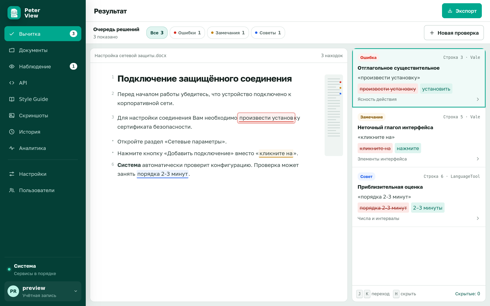
Автоматическая вычитка русской документации
Peter View проверяет русские тексты по грамматике, корпоративному стилю и единообразию терминов. Результат: список замечаний, каждое привязано к фрагменту документа. Система разворачивается в вашей инфраструктуре. Исходные тексты во внешние сервисы не передаются, пока вы сами не укажете адрес языковой модели.
git clone https://github.com/BadWisher/Peter-View.git
cd Peter-View
./deploy.shПосле запуска откройте http://localhost:3080. Учётная запись по умолчанию: admin / admin. Первый запуск занимает около полутора минут: инициализируется проверка языка.
Как устроена проверка
Сначала задаётся документ и состав проверки. Затем просматривается список замечаний. Корпоративный стиль хранится отдельно, в том же интерфейсе.
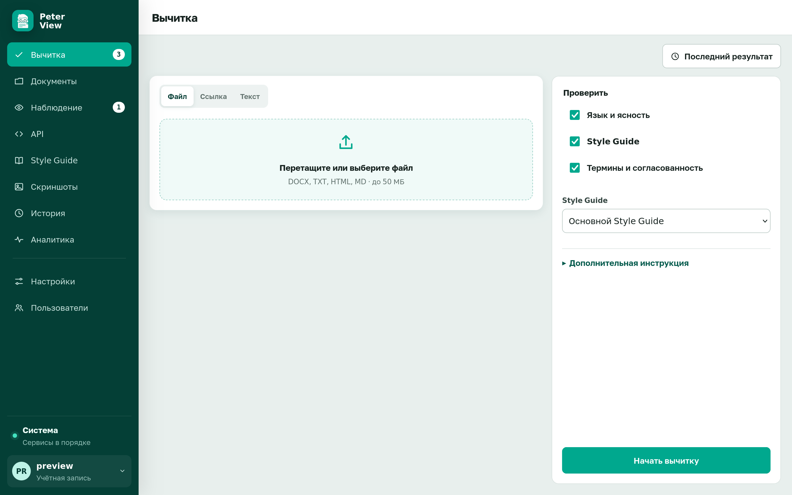
J далее
K назад
H скрыть
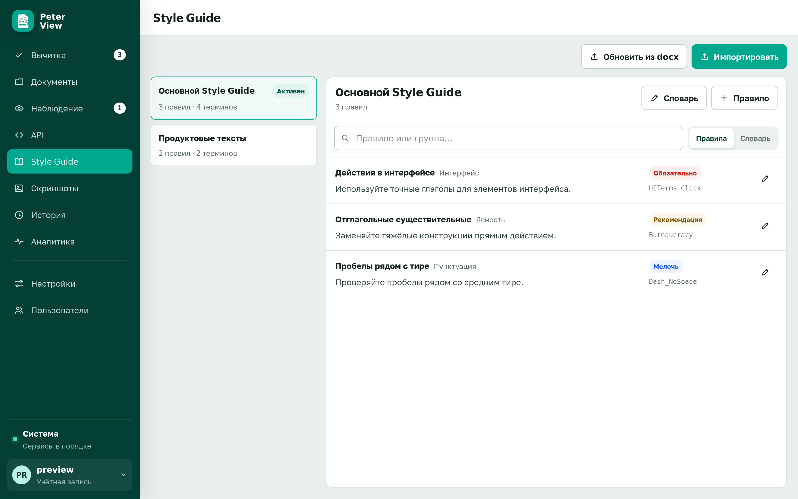
Style Guide
В поставку входит встроенный набор правил. Собственный гайд загружается из docx: правила и словарь. Редактор выбирает гайд для проверки. Изменять правила может только администратор.
Инфраструктура
| Развёртывание | Docker Compose. Три контейнера: интерфейс, сервер приложений, проверка языка |
|---|---|
| Память | Проверка языка около 1.5 ГБ, сервер приложений до 2 ГБ |
| Данные | Том backend-data. Резервная копия: make backup |
| Языковая модель | Не требуется для грамматики и гайда. Для проверки по смыслу указывается свой API в «Настройках» |
| Аутентификация | Локальный пароль или OIDC (Keycloak, Azure AD) |
| Лицензия | Apache-2.0 |
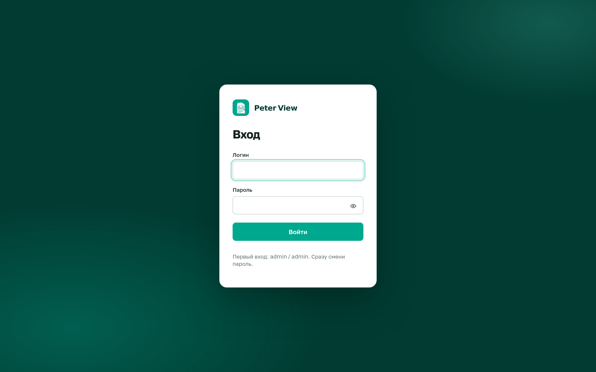
Учётная запись по умолчанию: admin / admin. Пока пароль не изменён, любой, кто имеет доступ к порту, получает права администратора. Смена пароля: меню учётной записи → «Сменить пароль».
Администрирование
Пользователи, адрес модели и состояние сервисов доступны администратору сразу после установки. Языковая модель не обязательна: грамматика и Style Guide работают без неё.
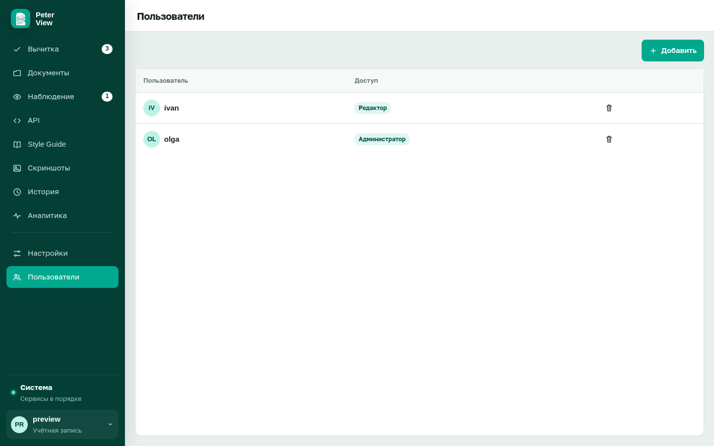
admin для рабочей группы не подходит.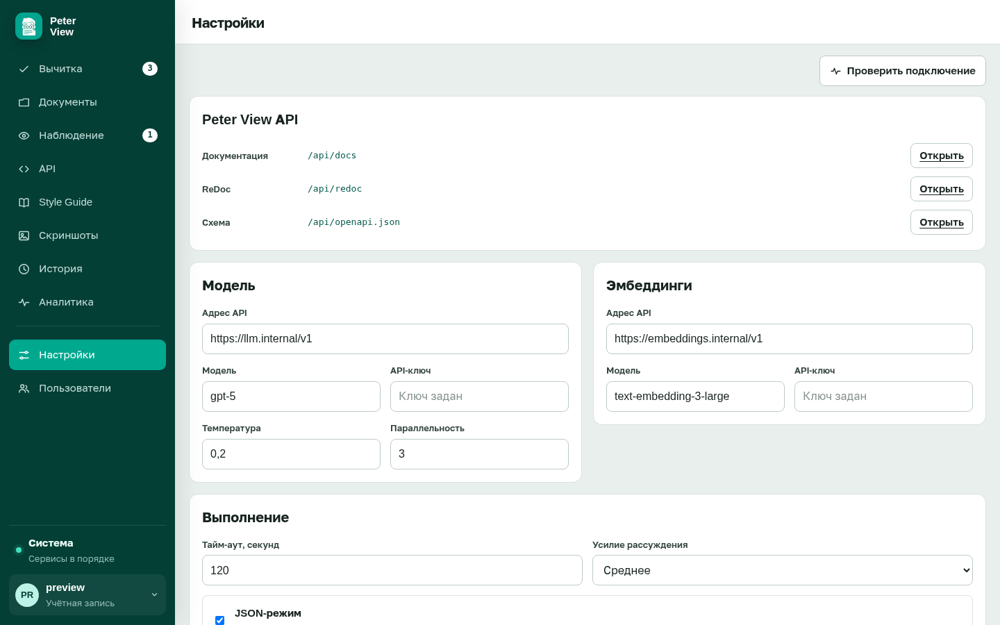
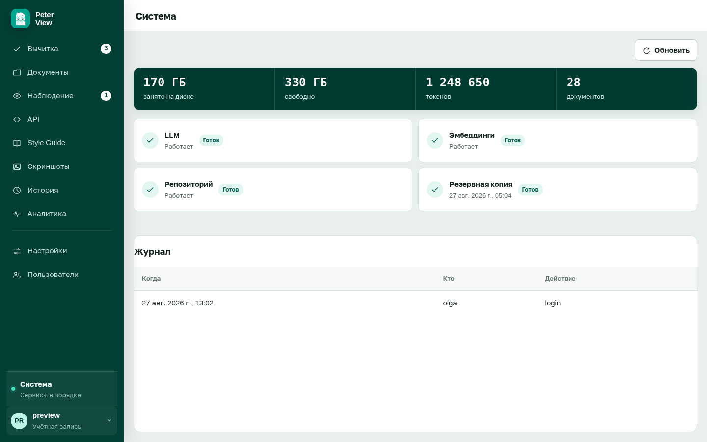
История и аналитика
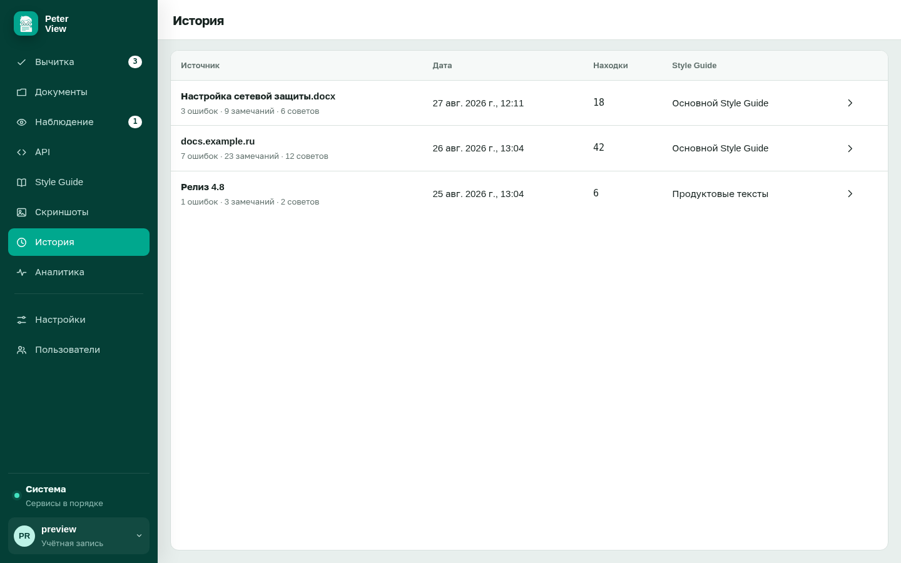
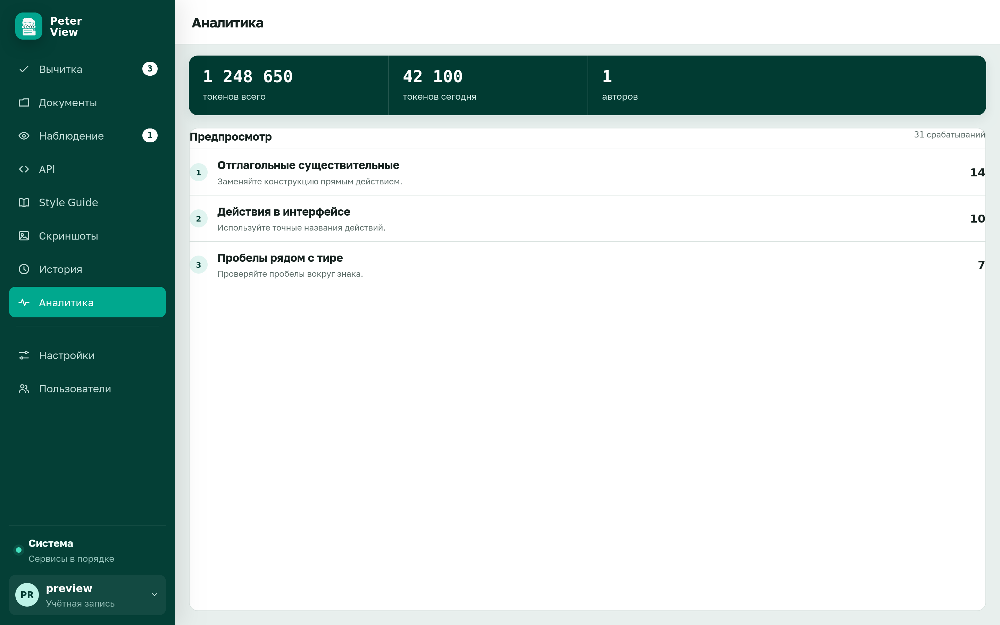
Дополнительные разделы
По умолчанию выключены. Включаются флагами в .env без пересборки интерфейса: FEATURE_DOCUMENTS, FEATURE_API, FEATURE_WATCH, FEATURE_SCREENSHOTS.
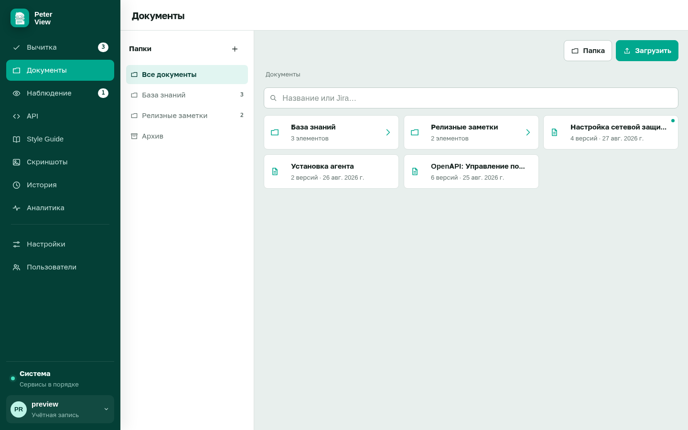
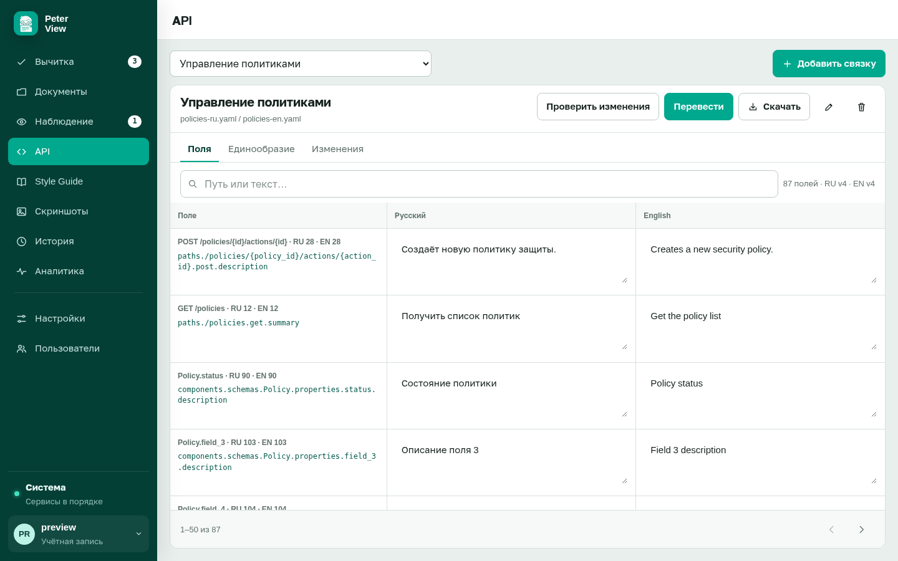
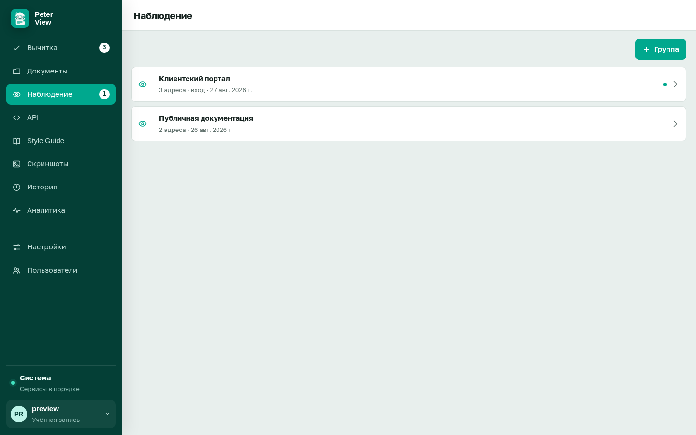
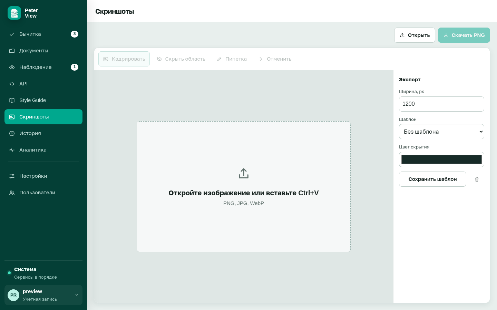